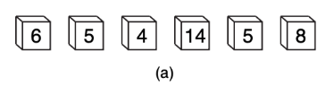
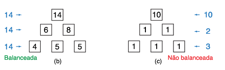

Questão 1 - Prova OBI 2023 Nível Sênior
O mais novo lançamento da OBI (Organização de Brincadeiras Infantis) é o jogo Balanceamento de Pirâmide, que visa explorar as habilidades matemáticas das crianças. O jogo contém seis cubos, todos do mesmo tamanho mas com pesos possivelmente diferentes (os cubos são preenchidos com diferentes volumes de areia). O peso de cada cubo em gramas está escrito em uma de suas faces. O Problema
Em Balanceamento de Pirâmide, o objetivo é empilhar os seis cubos de modo a formar uma pirâmide de três andares (com três cubos no primeiro andar, dois no segundo e um no terceiro) tal que os pesos totais de cada andar (ou seja, a soma dos pesos dos cubos no andar) possuam o mesmo valor; nesse caso, dizemos que a pirâmide é balanceada.Para que a Pirâmide seja balanceada, é necessário que a soma dos pesos dos cubos em cada andar seja igual aos outros
Veja a seguir: 
Explicação
Dada uma lista com 6 numeros inteiros entre 1 e 1000, devemos determinar se é possivel formar uma piramide cujos pesos em cada andar sejam iguais aos outros andares, mas, para isso temos algumas condições, vamos dizer que cada andar tem um peso X, logo o peso total dos cubos deve ser 3X para que possa ser balanceado. E claro, como o primeiro andar só terá um peso, este deve ser igual a um terço do peso total. E último, pegamos o peso maior para o primeiro andar e então devemos pegar mais dois pesos para o segundo andar, dado que as ultimas duas condições foram cumpridas, não há necessidade de verificar os ultimos três pesos restantes.Exemplo Prático
Soluções
C++
Mateus Bezrutchka
#include
#include
using namespace std;
int main() {
// lê numeros em um vetor e guarda a soma
int v[6];
int soma = 0;
for (int i = 0; i < 6; i++) {
cin >> v[i];
soma += v[i];
}
// se a soma nao é divisivel por 3, é impossivel
if (soma % 3 != 0) {
cout << "N" << endl;
return 0;
}
// o maior valor deve estar no terceiro andar
sort(v, v + 6);
if (v[5] != soma / 3) {
cout << "N" << endl;
return 0;
}
// temos que achar outros dois pro segundo andar
for (int i = 0; i < 5; i++) {
for (int k = i + 1; k < 5; k++) {
if (v[i] + v[k] == soma / 3) {
cout << "S" << endl;
return 0;
}
}
}
// nao achamos par pro segundo andar
cout << "N" << endl;
return 0;
}
JavaScript
Mateus Bezrutchka
// lê numeros em um vetor e guarda a soma
var v = Array(6);
var soma = 0;
for (var i = 0; i < 6; i++) {
scanf("%d", "v[i]");
soma += v[i];
}
// se a soma nao é divisivel por 3, é impossivel
if (soma % 3 != 0) {
printf("N\n");
return;
}
// ordenação por valor numerico
v.sort(function(a, b) { return a - b });
// o maior valor deve estar no terceiro andar
if (v[5] != soma / 3) {
printf("N\n");
return;
}
// temos que achar outros dois pro segundo andar
for (var i = 0; i < 5; i++) {
for (var k = i + 1; k < 5; k++) {
if (v[i] + v[k] == soma / 3) {
printf("S\n");
return;
}
}
}
// se chegamos aqui, nao achamos par pro segundo andar
printf("N\n");